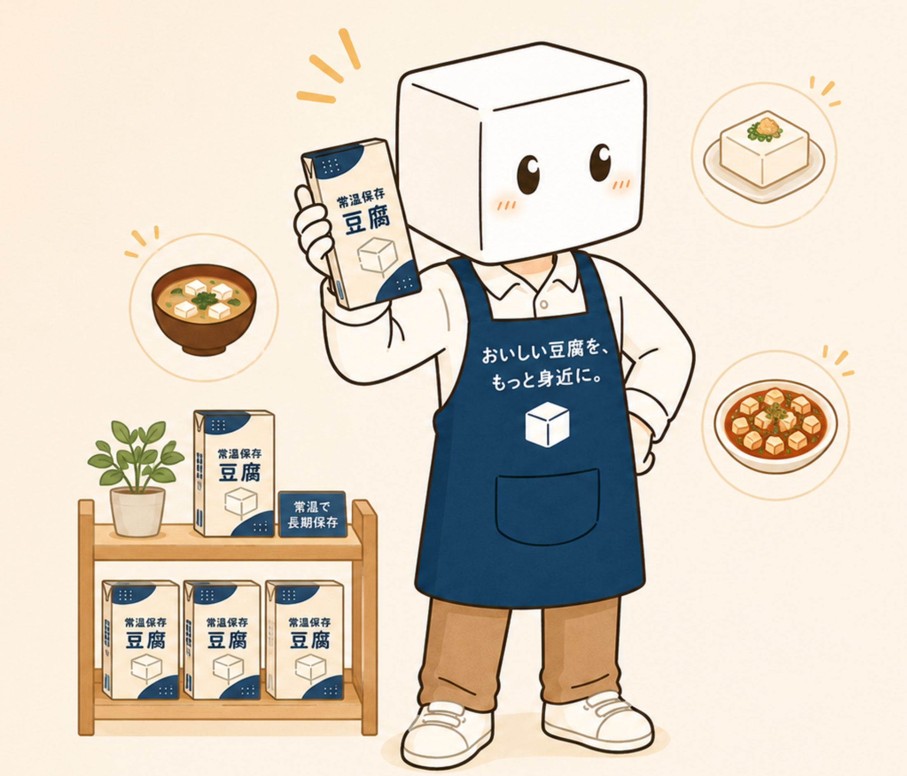
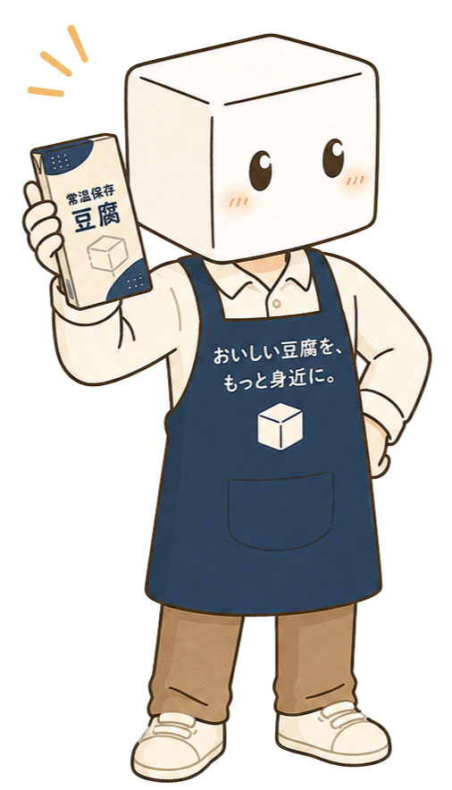
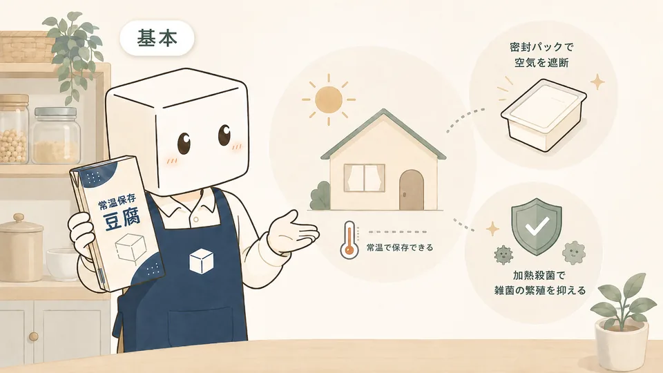
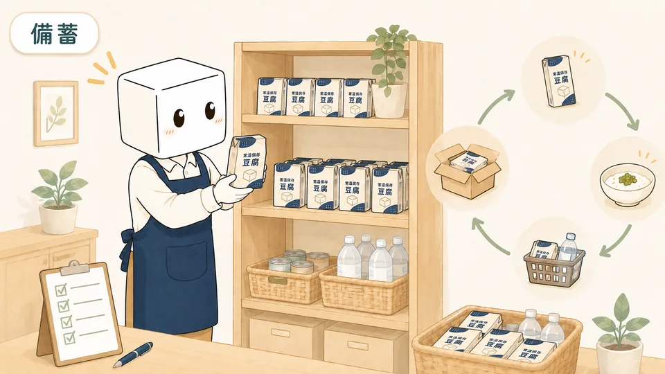
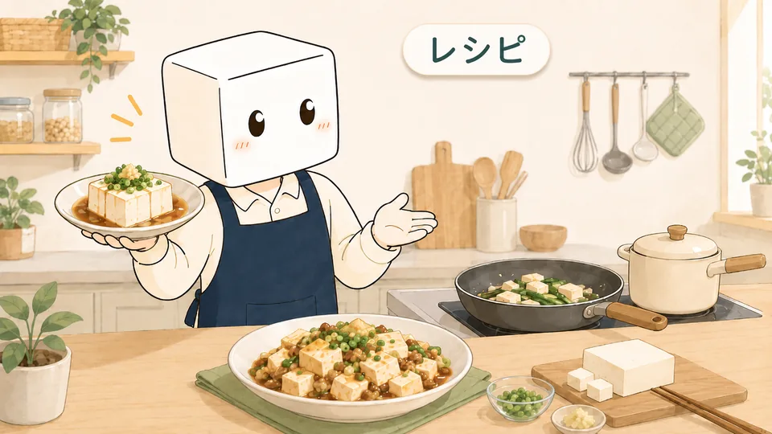
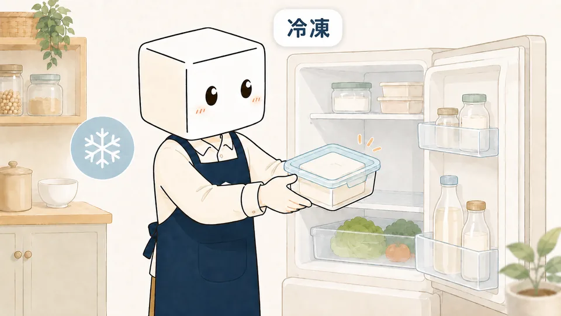
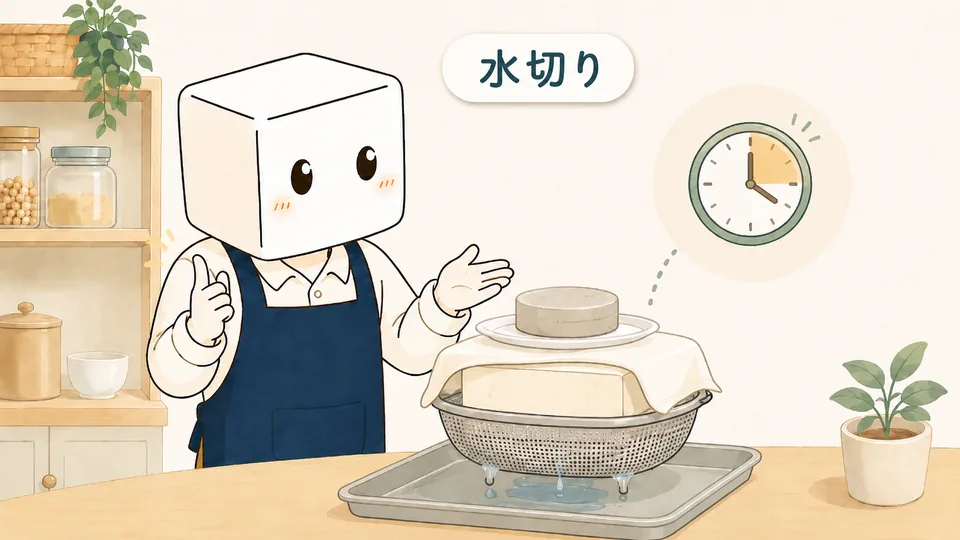
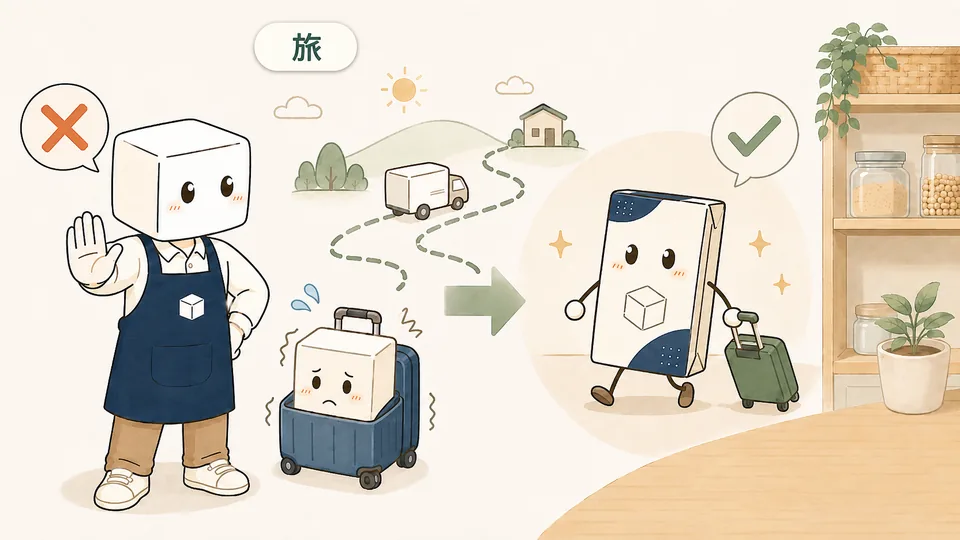
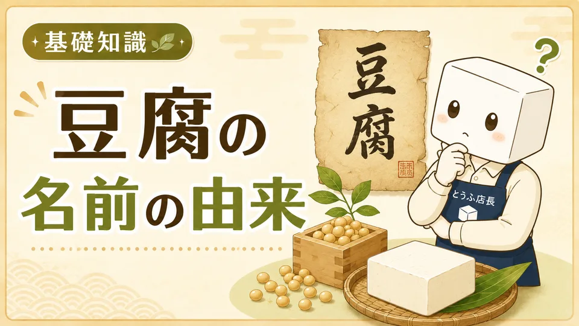
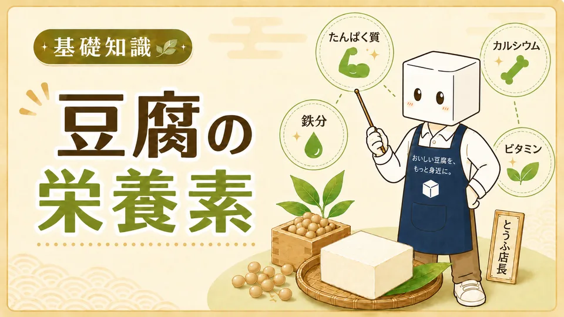

SHELF-STABLE TOFU GUIDE
常温保存豆腐を、 いつもの食卓にも、 もしもの備えにも。
常温保存できる豆腐を、味・賞味期限・価格から丁寧に比較。暮らしに合う一品を見つける専門ガイドです。
※ 常温保存の条件は商品により異なります。必ずパッケージの表示をご確認ください。

当サイトはアフィリエイト広告を利用しています。掲載商品を購入すると、売上の一部が当サイトに還元されることがあります。
はじめての方へ
常温保存豆腐って、
どんな豆腐？
未開封の状態で常温保存できるようにつくられた豆腐です。冷蔵庫の場所を取らず、まとめ買いやローリングストックにも向いています。
もっと詳しく知りたい方へ 常温保存できる仕組みと、開封後の注意点 →未開封なら常温で置けるため、冷蔵庫を圧迫せず保管できます。
12個セットなどを自宅へ届けてもらえ、重いまとめ買いにも便利です。
普段の料理で使いながら補充する、ローリングストックに向いています。

SITE CHARACTER
はじめまして、
「とうふ店長」です。
常温保存豆腐の選び方や保存の注意点を、やさしく案内いたします。
おすすめ比較
目的から選ぶ、常温保存豆腐
商品情報を同じ基準で確認し、原材料・容量・価格・保存期間のバランスからおすすめをご案内します。
3商品をひと目で比較
常温保存豆腐 比較早見表
価格だけでなく、容量や賞味期間、原材料の違いも確認して選びましょう。
| 比較項目 |
当サイトおすすめ
さとの雪 ずっとおいしい豆腐 |
森永乳業 絹とうふ しっかり |
雪印メグミルク 雪とうふ |
|---|---|---|---|
| おすすめ用途 | 初めての購入・普段使い | しっかり食感・料理用 | 保存期間重視・備蓄用 |
| 内容量 | 300g×12個 | 253g×12個 | 300g×12個 |
| 参考価格 | 楽天 2,200円 Amazon 1,940円 |
楽天 1,920円 Amazon 1,946円 |
楽天 2,600円 Amazon販売なし |
| 賞味期間 | 製造日から157日 | 製造日から約4～5か月 | 製造日を含む180日 |
| 原材料の特徴 | 国産大豆100％・にがり | 丸大豆・大豆たんぱく質 | 国産大豆・にがり |
価格・商品仕様は2026年6月11日確認。価格、送料、在庫状況は変動するため、購入前に各商品ページで最新情報をご確認ください。
賞味期限について：製造日からの賞味期間が長い商品でも、購入時期や販売店の在庫状況により、届いた時点の残存期間が短い場合があります。備蓄用に購入する際は、商品ページの案内を確認し、到着後すぐに実際の賞味期限をご確認ください。
読みもの
知って選ぶ、きちんと備える

常温保存できる豆腐の仕組みと、開封後の注意点
保存条件の読み方と、購入前に確認したいポイントを整理します。
読む時間：5分
常温保存豆腐は何個備える？家族人数別の考え方
読む時間：7分
森永 絹とうふを使った公式レシピ29件
公式レシピ案内
豆腐は冷凍してもいい？解凍後の食感の変化と活用法
読む時間：3分
豆腐の水切りのコツ｜方法と時間の目安
読む時間：3分
「豆腐には旅をさせるな」の意味と、常温保存豆腐
読む時間：3分
豆腐の「腐」はなぜ「腐る」の字を使うの？名前の由来
読む時間：3分